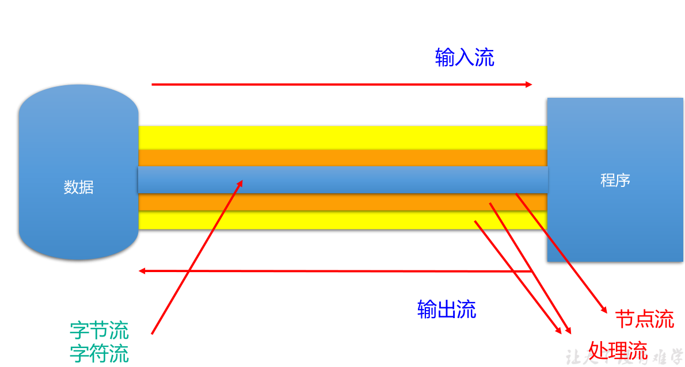
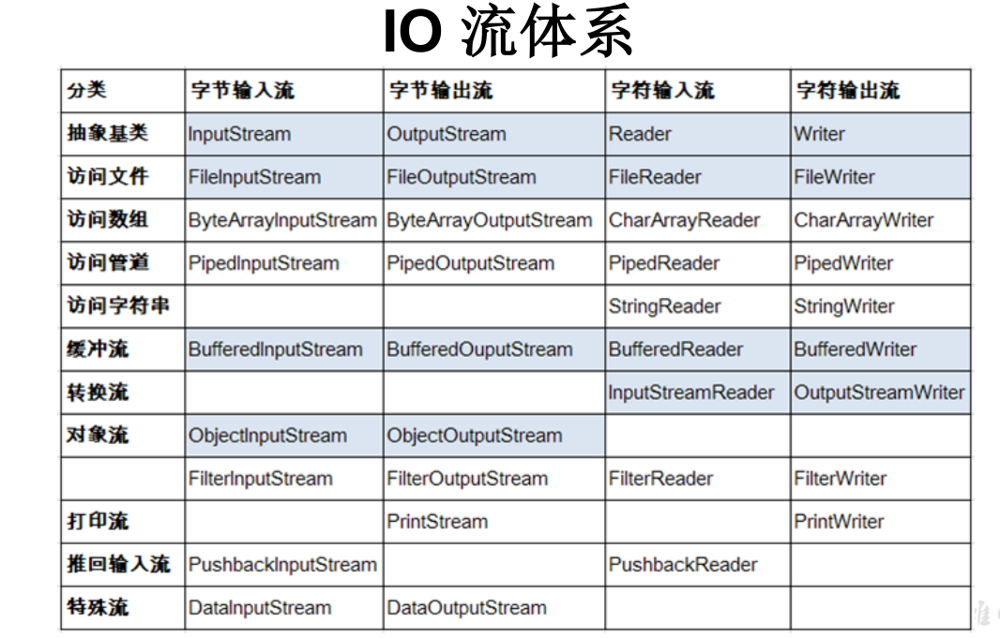
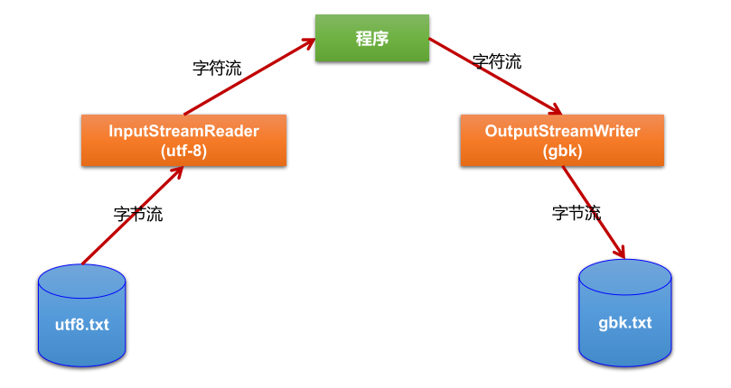

File类的获取功能
File类的重命名功能
public boolean renameTo(File dest):把文件重命名为指定的文件路径；
比如：file1.renameTo(file2)为例：
要想保证返回true,需要file1在硬盘中是存在的，且file2不能在硬盘中存在。
File 类的判断功能
File类的创建功能
public boolean createNewFile() ：创建文件。若文件存在，则不创建，返回false
public boolean mkdir() ：创建文件目录。如果此文件目录存在，就不创建了。如果此文件目录的上层目录不存在，也不创建。
public boolean mkdirs() ：创建文件目录。如果上层文件目录不存在，一并创建
注意事项：如果你创建文件或者 文件 目录没有 写 盘符路径 ， 那么 ， 默认在项目
路径下 。
File 类的删除功能
判断指定目录下是否有后缀名为.jpg的文件，如果有，就输出该文件名称
import org.junit.Test;
import java.io.File;
import java.io.FilenameFilter;
/**
* 判断指定目录下是否有后缀名为.jpg的文件，如果有，就输出该文件名称
*/
public class FindJPGFileTest {
@Test
public void test1(){
File srcFile = new File("d:\\code");
String[] fileNames = srcFile.list();
for(String fileName : fileNames){
if(fileName.endsWith(".jpg")){
System.out.println(fileName);
}
}
}
@Test
public void test2(){
File srcFile = new File("d:\\code");
File[] listFiles = srcFile.listFiles();
for(File file : listFiles){
if(file.getName().endsWith(".jpg")){
System.out.println(file.getAbsolutePath());
}
}
}
/*
* File类提供了两个文件过滤器方法
* public String[] list(FilenameFilter filter)
* public File[] listFiles(FileFilter filter)
*/
@Test
public void test3(){
File srcFile = new File("d:\\code");
File[] subFiles = srcFile.listFiles(new FilenameFilter() {
@Override
public boolean accept(File dir, String name) {
return name.endsWith(".jpg");
}
});
for(File file : subFiles){
System.out.println(file.getAbsolutePath());
}
}
}import java.io.File;
/**
* 遍历指定目录所有文件名称，包括子文件目录中的文件。
拓展1：并计算指定目录占用空间的大小
拓展2：删除指定文件目录及其下的所有文件
*/
public class ListFilesTest {
public static void main(String[] args) {
// 递归:文件目录
/** 打印出指定目录所有文件名称，包括子文件目录中的文件 */
// 1.创建目录对象
File dir = new File("E:\\teach\\01_javaSE\\Java编程语言\\3_软件");
// 2.打印目录的子文件
printSubFile(dir);
}
public static void printSubFile(File dir) {
// 打印目录的子文件
File[] subfiles = dir.listFiles();
for (File f : subfiles) {
if (f.isDirectory()) {// 文件目录
printSubFile(f);
} else {// 文件
System.out.println(f.getAbsolutePath());
}
}
}
// 方式二：循环实现
// 列出file目录的下级内容，仅列出一级的话
// 使用File类的String[] list()比较简单
public void listSubFiles(File file) {
if (file.isDirectory()) {
String[] all = file.list();
for (String s : all) {
System.out.println(s);
}
} else {
System.out.println(file + "是文件！");
}
}
// 列出file目录的下级，如果它的下级还是目录，接着列出下级的下级，依次类推
// 建议使用File类的File[] listFiles()
public void listAllSubFiles(File file) {
if (file.isFile()) {
System.out.println(file);
} else {
File[] all = file.listFiles();
// 如果all[i]是文件，直接打印
// 如果all[i]是目录，接着再获取它的下一级
for (File f : all) {
listAllSubFiles(f);// 递归调用：自己调用自己就叫递归
}
}
}
// 拓展1：求指定目录所在空间的大小
// 求任意一个目录的总大小
public long getDirectorySize(File file) {
// file是文件，那么直接返回file.length()
// file是目录，把它的下一级的所有大小加起来就是它的总大小
long size = 0;
if (file.isFile()) {
size += file.length();
} else {
File[] all = file.listFiles();// 获取file的下一级
// 累加all[i]的大小
for (File f : all) {
size += getDirectorySize(f);// f的大小;
}
}
return size;
}
// 拓展2：删除指定的目录
public void deleteDirectory(File file) {
// 如果file是文件，直接delete
// 如果file是目录，先把它的下一级干掉，然后删除自己
if (file.isDirectory()) {
File[] all = file.listFiles();
// 循环删除的是file的下一级
for (File f : all) {// f代表file的每一个下级
deleteDirectory(f);
}
}
// 删除自己
file.delete();
}
}按操作数据单元不同分为：字节流（8bit），字符流（16bit）；
按数据流的流向不同分为：输入流、输出流；
按流的角色的不同分为：节点流，处理流；
Java的IO流共涉及40多个类，实际上非常规则，都是从如下4个基类派生的。由这四个类派生出来的子类都是以其父类名作为后缀；
| （抽象基类） | 字节流 | 字符流 |
|---|---|---|
| 输入流 | InputStream | Reader |
| 输出流 | OutputStream | Writer |


package com.atguigu.java;
import org.junit.Test;
import java.io.File;
import java.io.FileReader;
import java.io.IOException;
public class FileReaderWriterTest {
public static void main(String[] args) {
File file = new File("hello.txt");// 相较于当前功能
}
/*
将day09下的hello.txt文件内容读入程序中，并输出到控制台
说明点：
1. read()的理解：返回读入的一个字符。如果达到文件末尾，返回-1
2. 异常的处理：为了保证流资源一定可以执行关闭操作。需要使用try-catch-finally处理
3. 读入的文件一定要存在，否则就会报FileNotFoundException。
*/
@Test
public void testFileReader() {
FileReader fr = null;
try {
// 1. 实例化File类对象，指明要操作的文件
File file = new File("hello.txt"); // 相较于当前module
// 2. 提供具体的流
fr = new FileReader(file);
// 3. 数据的读入
//read():返回读入的一个字符。如果达到文件末尾，返回-1
//方式一：
// int data = fr.read();
// while(data != -1){
// System.out.println((char)data);
// data = fr.read();
// }
// 方式二：语法上针对方式一的修改
int data;
while((data = fr.read()) != -1){
System.out.println((char)data);
}
} catch (IOException e) {
e.printStackTrace();
} finally {
try {
// 4. 关闭流
if(fr != null){
fr.close();
}
} catch (IOException e) {
e.printStackTrace();
}
}
}
//对read()操作升级：使用read的重载方法
@Test
public void testFileReader1() {
FileReader fr = null;
try {
// 1. File类的实例化
File file = new File("hello.txt");
// 2. FileReader流的实例化
fr = new FileReader(file);
// 3. 读入的操作
//read(char[] cbuf):返回每次读入cbuf数组中的字符的个数。如果达到文件末尾，返回-1
char[] cbuf = new char[5];
int len;
while((len = fr.read(cbuf)) != -1){
// 方式一：
// 错误的写法
// for(int i = 0; i < cbuf.length; i++){
// System.out.print(cbuf[i]);
// }
// 正确的写法：
// for(int i = 0; i < len; i++){
// System.out.print(cbuf[i]);
// }
// 方式二：
// 错误的写法：对应方式一的错误写法
// String str = new String(cbuf);
// System.out.print(str);
// 正确的写法二：
String str= new String(cbuf, 0, len);
System.out.print(str);
}
} catch (IOException e) {
e.printStackTrace();
} finally {
if(fr != null){
// 4. 资源的关闭
try {
fr.close();
} catch (IOException e) {
e.printStackTrace();
}
}
}
}
}/*
从内存中写出数据到硬盘的文件里。
说明：
1. 输出操作，对应的File可以不存在的。并不会报异常
2.
File对应的硬盘中的文件如果不存在，在输出的过程中，会自动创建此文件。
File对应的硬盘中的文件如果存在：
如果流使用的构造器是：FileWriter(file,false) / FileWriter(file):对原有文件的覆盖
如果流使用的构造器是：FileWriter(file,true):不会对原有文件覆盖，而是在原有文件基础上追加内容
*/
@Test
public void testFileWriter() {
FileWriter fw = null;
try {
//1.提供File类的对象，指明写出到的文件
File file = new File("hello1.txt");
//2.提供FileWriter的对象，用于数据的写出
fw = new FileWriter(file,false);
//3.写出的操作
fw.write("I have a dream!\n");
fw.write("you need to have a dream!");
} catch (IOException e) {
e.printStackTrace();
} finally {
//4.流资源的关闭
if(fw != null){
try {
fw.close();
} catch (IOException e) {
e.printStackTrace();
}
}
}
}@Test
public void testFileReaderFileWriter() {
FileReader fr = null;
FileWriter fw = null;
try {
//1.创建File类的对象，指明读入和写出的文件
File srcFile = new File("hello.txt");
File destFile = new File("hello2.txt");
//不能使用字符流来处理图片等字节数据
// File srcFile = new File("爱情与友情.jpg");
// File destFile = new File("爱情与友情1.jpg");
//2.创建输入流和输出流的对象
fr = new FileReader(srcFile);
fw = new FileWriter(destFile);
//3.数据的读入和写出操作
char[] cbuf = new char[5];
int len;//记录每次读入到cbuf数组中的字符的个数
while((len = fr.read(cbuf)) != -1){
//每次写出len个字符
fw.write(cbuf,0,len);
}
} catch (IOException e) {
e.printStackTrace();
} finally {
//4.关闭流资源
//方式一：
// try {
// if(fw != null)
// fw.close();
// } catch (IOException e) {
// e.printStackTrace();
// }finally{
// try {
// if(fr != null)
// fr.close();
// } catch (IOException e) {
// e.printStackTrace();
// }
// }
//方式二：
try {
if(fw != null)
fw.close();
} catch (IOException e) {
e.printStackTrace();
}
try {
if(fr != null)
fr.close();
} catch (IOException e) {
e.printStackTrace();
}
}
}//使用字节流FileInputStream处理文本文件，可能出现乱码。
@Test
public void testFileInputStream() {
FileInputStream fis = null;
try {
//1. 造文件
File file = new File("hello.txt");
//2.造流
fis = new FileInputStream(file);
//3.读数据
byte[] buffer = new byte[5];
int len;//记录每次读取的字节的个数
while((len = fis.read(buffer)) != -1){
String str = new String(buffer,0,len);
System.out.print(str);
}
} catch (IOException e) {
e.printStackTrace();
} finally {
if(fis != null){
//4.关闭资源
try {
fis.close();
} catch (IOException e) {
e.printStackTrace();
}
}
}
}
/*
实现对图片的复制操作
*/
@Test
public void testFileInputOutputStream() {
FileInputStream fis = null;
FileOutputStream fos = null;
try {
File srcFile = new File("爱情与友情.jpg");
File destFile = new File("爱情与友情2.jpg");
fis = new FileInputStream(srcFile);
fos = new FileOutputStream(destFile);
//复制的过程
byte[] buffer = new byte[5];
int len;
while((len = fis.read(buffer)) != -1){
fos.write(buffer,0,len);
}
} catch (IOException e) {
e.printStackTrace();
} finally {
if(fos != null){
try {
fos.close();
} catch (IOException e) {
e.printStackTrace();
}
}
if(fis != null){
try {
fis.close();
} catch (IOException e) {
e.printStackTrace();
}
}
}
}/*
实现非文本文件的复制
*/
@Test
public void BufferedStreamTest() throws FileNotFoundException {
BufferedInputStream bis = null;
BufferedOutputStream bos = null;
try {
//1.造文件
File srcFile = new File("爱情与友情.jpg");
File destFile = new File("爱情与友情3.jpg");
//2.造流
//2.1 造节点流
FileInputStream fis = new FileInputStream((srcFile));
FileOutputStream fos = new FileOutputStream(destFile);
//2.2 造缓冲流
bis = new BufferedInputStream(fis);
bos = new BufferedOutputStream(fos);
//3.复制的细节：读取、写入
byte[] buffer = new byte[10];
int len;
while((len = bis.read(buffer)) != -1){
bos.write(buffer,0,len);
// bos.flush();//刷新缓冲区
}
} catch (IOException e) {
e.printStackTrace();
} finally {
//4.资源关闭
//要求：先关闭外层的流，再关闭内层的流
if(bos != null){
try {
bos.close();
} catch (IOException e) {
e.printStackTrace();
}
}
if(bis != null){
try {
bis.close();
} catch (IOException e) {
e.printStackTrace();
}
}
//说明：关闭外层流的同时，内层流也会自动的进行关闭。关于内层流的关闭，我们可以省略.
// fos.close();
// fis.close();
}使用BufferedReader和BufferedWriter实现文本文件的复制
*/
@Test
public void testBufferedReaderBufferedWriter(){
BufferedReader br = null;
BufferedWriter bw = null;
try {
//创建文件和相应的流
br = new BufferedReader(new FileReader(new File("dbcp.txt")));
bw = new BufferedWriter(new FileWriter(new File("dbcp1.txt")));
//读写操作
//方式一：使用char[]数组
// char[] cbuf = new char[1024];
// int len;
// while((len = br.read(cbuf)) != -1){
// bw.write(cbuf,0,len);
// // bw.flush();
// }
//方式二：使用String
String data;
while((data = br.readLine()) != null){
//方法一：
// bw.write(data + "\n");//data中不包含换行符
//方法二：
bw.write(data);//data中不包含换行符
bw.newLine();//提供换行的操作
}
} catch (IOException e) {
e.printStackTrace();
} finally {
//关闭资源
if(bw != null){
try {
bw.close();
} catch (IOException e) {
e.printStackTrace();
}
}
if(br != null){
try {
br.close();
} catch (IOException e) {
e.printStackTrace();
}
}
}
}
import org.junit.Test;
import java.io.*;
/**
* 处理流之二：转换流的使用
* 1.转换流：属于字符流
* InputStreamReader：将一个字节的输入流转换为字符的输入流
* OutputStreamWriter：将一个字符的输出流转换为字节的输出流
*
* 2.作用：提供字节流与字符流之间的转换
*
* 3. 解码：字节、字节数组 --->字符数组、字符串
* 编码：字符数组、字符串 ---> 字节、字节数组
*
*
* 4.字符集
*ASCII：美国标准信息交换码。
用一个字节的7位可以表示。
ISO8859-1：拉丁码表。欧洲码表
用一个字节的8位表示。
GB2312：中国的中文编码表。最多两个字节编码所有字符
GBK：中国的中文编码表升级，融合了更多的中文文字符号。最多两个字节编码
Unicode：国际标准码，融合了目前人类使用的所有字符。为每个字符分配唯一的字符码。所有的文字都用两个字节来表示。
UTF-8：变长的编码方式，可用1-4个字节来表示一个字符。
*/
public class InputStreamReaderTest {
/*
此时处理异常的话，仍然应该使用try-catch-finally
InputStreamReader的使用，实现字节的输入流到字符的输入流的转换
*/
@Test
public void test1() throws IOException {
FileInputStream fis = new FileInputStream("dbcp.txt");
// InputStreamReader isr = new InputStreamReader(fis);//使用系统默认的字符集
//参数2指明了字符集，具体使用哪个字符集，取决于文件dbcp.txt保存时使用的字符集
InputStreamReader isr = new InputStreamReader(fis,"UTF-8");//使用系统默认的字符集
char[] cbuf = new char[20];
int len;
while((len = isr.read(cbuf)) != -1){
String str = new String(cbuf,0,len);
System.out.print(str);
}
isr.close();
}
/*
此时处理异常的话，仍然应该使用try-catch-finally
综合使用InputStreamReader和OutputStreamWriter
*/
@Test
public void test2() throws Exception {
//1.造文件、造流
File file1 = new File("dbcp.txt");
File file2 = new File("dbcp_gbk.txt");
FileInputStream fis = new FileInputStream(file1);
FileOutputStream fos = new FileOutputStream(file2);
InputStreamReader isr = new InputStreamReader(fis,"utf-8");
OutputStreamWriter osw = new OutputStreamWriter(fos,"gbk");
//2.读写过程
char[] cbuf = new char[20];
int len;
while((len = isr.read(cbuf)) != -1){
osw.write(cbuf,0,len);
}
//3.关闭资源
isr.close();
osw.close();
}
}
/*
1.标准的输入、输出流
1.1
System.in:标准的输入流，默认从键盘输入
System.out:标准的输出流，默认从控制台输出
1.2
System类的setIn(InputStream is) / setOut(PrintStream ps)方式重新指定输入和输出的流。
1.3练习：
从键盘输入字符串，要求将读取到的整行字符串转成大写输出。然后继续进行输入操作，
直至当输入“e”或者“exit”时，退出程序。
方法一：使用Scanner实现，调用next()返回一个字符串
方法二：使用System.in实现。System.in ---> 转换流 ---> BufferedReader的readLine()
*/
public static void main(String[] args) {
BufferedReader br = null;
try {
InputStreamReader isr = new InputStreamReader(System.in);
br = new BufferedReader(isr);
while (true) {
System.out.println("请输入字符串：");
String data = br.readLine();
if ("e".equalsIgnoreCase(data) || "exit".equalsIgnoreCase(data)) {
System.out.println("程序结束");
break;
}
String upperCase = data.toUpperCase();
System.out.println(upperCase);
}
} catch (IOException e) {
e.printStackTrace();
} finally {
if (br != null) {
try {
br.close();
} catch (IOException e) {
e.printStackTrace();
}
}
}
}/*
2. 打印流：PrintStream 和PrintWriter
2.1 提供了一系列重载的print() 和 println()
2.2 练习：
*/
@Test
public void test2() {
PrintStream ps = null;
try {
FileOutputStream fos = new FileOutputStream(new File("D:\\IO\\text.txt"));
// 创建打印输出流,设置为自动刷新模式(写入换行符或字节 '\n' 时都会刷新输出缓冲区)
ps = new PrintStream(fos, true);
if (ps != null) {// 把标准输出流(控制台输出)改成文件
System.setOut(ps);
}
for (int i = 0; i <= 255; i++) { // 输出ASCII字符
System.out.print((char) i);
if (i % 50 == 0) { // 每50个数据一行
System.out.println(); // 换行
}
}
} catch (FileNotFoundException e) {
e.printStackTrace();
} finally {
if (ps != null) {
ps.close();
}
}
} /*
3. 数据流
3.1 DataInputStream 和 DataOutputStream
3.2 作用：用于读取或写出基本数据类型的变量或字符串
练习：将内存中的字符串、基本数据类型的变量写出到文件中。
注意：处理异常的话，仍然应该使用try-catch-finally.
*/
@Test
public void test3() throws IOException {
DataOutputStream dos = new DataOutputStream(new FileOutputStream("data.txt"));
dos.writeUTF("刘建辰");
dos.flush();//刷新操作，将内存中的数据写入文件
dos.writeInt(23);
dos.flush();
dos.writeBoolean(true);
dos.flush();
dos.close();
}
/*
将文件中存储的基本数据类型变量和字符串读取到内存中，保存在变量中。
注意点：读取不同类型的数据的顺序要与当初写入文件时，保存的数据的顺序一致！
*/
@Test
public void test4() throws IOException {
//1.
DataInputStream dis = new DataInputStream(new FileInputStream("data.txt"));
//2.
String name = dis.readUTF();
int age = dis.readInt();
boolean isMale = dis.readBoolean();
System.out.println("name = " + name);
System.out.println("age = " + age);
System.out.println("isMale = " + isMale);
//3.
dis.close();
}import java.io.*;
/**
* 对象流的使用
* 1.ObjectInputStream 和 ObjectOutputStream
* 2.作用：用于存储和读取基本数据类型数据或对象的处理流。它的强大之处就是可以把Java中的对象写入到数据源中，也能把对象从数据源中还原回来。
*/
public class ObjectInputOutputStreamTest {
/*
序列化过程：将内存中的java对象保存到磁盘中或通过网络传输出去
使用ObjectOutputStream实现
*/
@Test
public void testObjectOutputStream(){
ObjectOutputStream oos = null;
try {
oos = new ObjectOutputStream(new FileOutputStream("object.dat"));
oos.writeObject(new String("我爱北京天安门"));
oos.flush();//刷新操作
oos.writeObject(new Person("王铭",23));
oos.flush();
oos.writeObject(new Person("张学良",23,1001,new Account(5000)));
oos.flush();
} catch (IOException e) {
e.printStackTrace();
} finally {
if(oos != null){
try {
oos.close();
} catch (IOException e) {
e.printStackTrace();
}
}
}
}
/*
反序列化：将磁盘文件中的对象还原为内存中的一个java对象
使用ObjectInputStream来实现
*/
@Test
public void testObjectInputStream(){
ObjectInputStream ois = null;
try {
ois = new ObjectInputStream(new FileInputStream("object.dat"));
Object obj = ois.readObject();
String str = (String) obj;
Person p = (Person) ois.readObject();
Person p1 = (Person) ois.readObject();
System.out.println(str);
System.out.println(p);
System.out.println(p1);
} catch (IOException e) {
e.printStackTrace();
} catch (ClassNotFoundException e) {
e.printStackTrace();
} finally {
if(ois != null){
try {
ois.close();
} catch (IOException e) {
e.printStackTrace();
}
}
}
}
}
Person需要满足如下的要求，方可序列化：
1.需要实现接口：Serializable
2.当前类提供一个全局常量：serialVersionUID
3.除了当前Person类需要实现Serializable接口之外，还必须保证其内部所有属性也必须是可序列化的。（默认情况下，基本数据类型可序列化）。
谈谈你对java.io.Serializable 接口的理解，我们知道它用于序列化，是空方法接口，还有其它认识吗？
实现了Serializable 接口的对象，可将它们转换成一系列字节，并可在以后完全恢复回原来的样子。 这一过程亦可通过网络进行。这意味着序列化机制能自动补偿操作系统间的差异。在 换句话说，可以先在Windows 机器上创建一个对象，对其序列化，然后通过网络发给一台Unix 机器，然后在那里准确无误地重新“装配”。不必关心数据在不同机器上如何表示，也不必关心字节的顺序或者其他任何细节。
由于大部分作为参数的类如String 、Integer 等都实现了java.io.Serializable 的接口，也可以利用多态的性质，作为参数使接口更灵活。
import org.junit.Test;
import java.io.File;
import java.io.IOException;
import java.io.RandomAccessFile;
/**
* RandomAccessFile的使用
* 1.RandomAccessFile直接继承于java.lang.Object类，实现了DataInput和DataOutput接口
* 2.RandomAccessFile既可以作为一个输入流，又可以作为一个输出流
*
* 3.如果RandomAccessFile作为输出流时，写出到的文件如果不存在，则在执行过程中自动创建。
* 如果写出到的文件存在，则会对原有文件内容进行覆盖。（默认情况下，从头覆盖）
*
* 4. 可以通过相关的操作，实现RandomAccessFile“插入”数据的效果
*/
public class RandomAccessFileTest {
@Test
public void test1() {
RandomAccessFile raf1 = null;
RandomAccessFile raf2 = null;
try {
//1.
raf1 = new RandomAccessFile(new File("爱情与友情.jpg"),"r");
raf2 = new RandomAccessFile(new File("爱情与友情1.jpg"),"rw");
//2.
byte[] buffer = new byte[1024];
int len;
while((len = raf1.read(buffer)) != -1){
raf2.write(buffer,0,len);
}
} catch (IOException e) {
e.printStackTrace();
} finally {
//3.
if(raf1 != null){
try {
raf1.close();
} catch (IOException e) {
e.printStackTrace();
}
}
if(raf2 != null){
try {
raf2.close();
} catch (IOException e) {
e.printStackTrace();
}
}
}
}
@Test
public void test2() throws IOException {
RandomAccessFile raf1 = new RandomAccessFile("hello.txt","rw");
raf1.seek(3);//将指针调到角标为3的位置
raf1.write("xyz".getBytes());//
raf1.close();
}
/*
使用RandomAccessFile实现数据的插入效果
*/
@Test
public void test3() throws IOException {
RandomAccessFile raf1 = new RandomAccessFile("hello.txt","rw");
raf1.seek(3);//将指针调到角标为3的位置
//保存指针3后面的所有数据到StringBuilder中
StringBuilder builder = new StringBuilder((int) new File("hello.txt").length());
byte[] buffer = new byte[20];
int len;
while((len = raf1.read(buffer)) != -1){
builder.append(new String(buffer,0,len)) ;
}
//调回指针，写入“xyz”
raf1.seek(3);
raf1.write("xyz".getBytes());
//将StringBuilder中的数据写入到文件中
raf1.write(builder.toString().getBytes());
raf1.close();
}
}